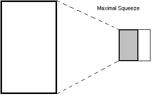

Введение
Интернет позволяет пользователям публиковать собственные графические изображения, например, созданные с помощью компьютера, или фотографии, выполненные цифровыми камерами. Чаще всего эти работы выполнены на высоком художественном уровне и такие файлы значительны по размеру (как геометрически, так и в объеме хранимой информации). Современные серверные технологии позволяют создать уменьшенные копии изображений для их предварительного просмотра.
В англоязычной литературе для обозначения уменьшенных копий оригиналов существуют два термина - preview и thumbnail. Ни одно их не имеет адекватного перевода в русскоязычной литературе кроме более близкого по смыслу термина - миниатюра. В дальнейшем, в данной статье будет использоваться именно это слово и производные от него (с целью исключения повторов в тексте) либо близкие по смыслу выражения.
Обозначения, принятые в статье
Все способы создания миниатюр предполагают выполнение предварительных арифметических операций для вычисления начальной точки копирования фрагмента оригинального изображения, размеров копируемой области. На протяжении данной работы будут использоваться следующие обозначения (выраженные в пикселях):
W,H- ширина и высота оригинального изображения, соответственно;X,Y- координаты начальной точки копирования (левого верхнего угла);width,height- ширина и высота миниатюры, соответственно;R,ratio- отношения меньшей стороны к большей стороне прямоугольников оригинала и миниатюры, соответственно;Ww- отношение ширины большого прямоугольника к ширине маленького;Hh- отношение высоты большого прямоугольника к ширине маленького.
Методы создания миниатюр
Основное место использования миниатюр - тематически структурированные коллекции и фото-галереи, где на главных страницах разделов выводятся уменьшенные копии изображений со ссылкой на оригинал. Для более подробного ознакомления с работой пользователь может посмотреть полную версию оригинала.
Размер миниатюры устанавливается администратором фото-галереи и имеет фиксированный размер, соответствующий общему дизайну. В настоящее время существует два наиболее распространенных способа создания миниатюр:
- пропорционально уменьшенная копия;
- вырезание некоторого фрагмента оригинала.
Каждый из способов имеет свои достоинства и недостатки. Например, миниатюры, созданные по первому способу позволяют увидеть миниатюрную копию цельного изображения, но могут испортить общий дизайн вследствие различной ориентации изображений (книжная или альбомная). А второй способ не дает полного представления о представленном изображении.
Однако можно выделить еще один, третий способ создания миниатюр, который можно представить как комбинацию первых двух. В данной статье будут рассмотрены все возможные способы.
Дополнительно, в противовес традиционным методам создания миниатюрных копий фиксированного размера, выраженного в пикселях, будет рассмотрено пропорциональное сжатие, выраженное в процентах от геометрического размера оригинального изображения. Будет показано, что этот способ не может рассматриваться как полноценный метод создания миниатюр, но имеет право на существование в определенных случаях.
По-видимому, не существует терминов, обозначающих способы создания миниатюр (по крайней мере, автор статьи их не обнаружил, кроме существующих терминов - масштабирование и обрезка), поэтому в статье будет использовать собственные. Эта терминология не претендует быть общепринятой, однако если это случится - автор будет рад.
Метод максимального сжатия
Используемый термин метод максимального сжатия означает сжатие большей стороны оригинала, так чтобы он был вписан полностью в размеры предлагаемой миниатюры. Для этого необходимо:
- определить большую сторону прямоугольника первоначального изображения;
- вычислить отношение
R; - вычислить меньшую сторону прямоугольника миниатюры путем умножения отношения
Rи большей стороны.
На псевдокоде это будет описано так:
if W > H
then
height = H * width / W
else
width = W * height / H
end if
Таким образом, будут определены размеры будущей копии. Это необходимо, для создания уменьшенной копии, которая будет вписана в заданные рамки миниатюры без искажений. Дальнейшие действия заключаются в использовании соответствующих графических средств на стороне сервера по преобразованию изображений. Следующий пример иллюстрирует преобразование, реализованное на PHP (в предположении, что исходное изображение уже загружено в программу - переменная $srcImage, и его размеры получены в $width и $height):
$dstImage = imagecreate($width, $height);
imagecopyresized(
$dstImage, $srcImage,
0, 0, 0, 0,
$width, $height, $W, $H);
Описание данного метода завершим рисунком, иллюстрирующим данный подход.
Рисунок 1. Метод максимального сжатия
Фрагмент целого
Вырезать фрагмент технически достаточно простой способ - все-таки вся работа заключается лишь в копирования части изображения. Однако эстетическая сторона явно не соблюдена. В лучшем случае, если программистом заложена возможность - позволить пользователям выбрать подходящий фрагмент для показа на миниатюре. В худшем - будет создана копия, например, центральной части. Тем не менее техническую сторону мы рассмотрим. Так же рассмотрим вариант выбора фрагмента.
Следующий код на PHP иллюстрирует данный подход:
$dstImage = imagecreate($width, $height);
imagecopy(
$dstImage, $srcImage
0, 0, $X, $Y,
$width, $height);
При всем многообразии начальных координат источника копирования автор считает, что источник копии может иметь только девять фиксированных позиций:
- центральная;
- крайние левая и правая стороны;
- крайние верхняя и нижняя границы;
- углы прямоугольника.
Соответственно, можно говорить о вертикальном и горизонтальном выравнивании. Алгоритм вычисления координат источника описан на псевдокоде:
if horizontal align = left
then
X = 0
else if horizontal align = right
X = W - width
else
X = (W - width) / 2
end if
if vertical align = top
then
Y = 0
else if vertical align = bottom
Y = H - height
else
Y = (H - height) / 2
end if
Рисунок 2. Фрагмент целого

Метод минимального сжатия
Рассмотрим вертикально расположенное изображение, которое необходимо вписать в квадрат. Если метод максимального сжатия, предполагает, что необходимо сжать большую сторону на столько, чтобы она полностью была вписана в соответствующую сторону миниатюры, то для реализации этого метода необходимо сжать меньшую, чтобы добиться требуемого результата.
Рисунок 3. Метод минимального сжатия

В общем случае, одна из сторон большого прямоугольника должна быть вписана в соответствующую сторону малого. При этом коэффициент сжатия (масштабирования) должен быть минимален. Этого легко добиться сравнивая соотношения соответствующих сторон - большее соотношение определяет сторону, которое будет обрезано при масштабировании.
Ww = W / width
Hh = H / height
if Ww > Hh
then
W = width * Hh
X = ...
else
H = height * Ww
Y = ...
end if
Здесь используется алгоритм вычисления начальных координат источника фрагмента, идентичный описанному ранее алгоритму.
Так как одна из сторон большего прямоугольника будет полностью вписана в соответствующую сторону меньшего, а другая - обрезана, то здесь тоже можно говорить о выравнивании - или вертикальном, или горизонтальном.
Пропорциональное сжатие в процентах
Последний способ создания миниатюр сложно отнести к действительно полноценному методу, однако он тоже требует своего рассмотрения. Причина кроется в том что, это фактически метод максимального сжатия и метод вырезания фрагмента целого, выраженные в пропорциональном уменьшении геометрических размеров изображения, но выраженное в процентах. Этот способ логично использовать в двух случаях:
- в проектах, где жестко заданы размеры исходного изображения (фиксированная ширина и/или фиксированная высота);
- при преобразовании очень больших изображений, когда создание миниатюры в один проход может привести к переполнению памяти.
При этом следует иметь в виду, что пропорции относятся к соответствующим сторонам исходного изображения и результирующего.
Иллюстрация создания миниатюр на PHP
В этом разделе будет подробно рассмотрен реализованный на PHP в рамках объектно-ориентированного похода модуль Thumbnail на основе описанного алгоритма.
Основным публичным методом является метод output(). В своей работе он использует результат работы метода render(), определяет приемник для вывода изображения (браузер или файл на сервере):
function output($input, $output=null, $options=array())
{
// Load source file and render image
$renderImage = Thumbnail::render($input, $options);
if ( ! $renderImage ) {
user_error('Error rendering image',
E_USER_NOTICE);
return false;
}
// Set output image type
// By default PNG image
$type = isset($options['type']) ? $options['type'] : IMAGETYPE_PNG;
// Before output to browsers send appropriate headers
if ( empty($output) ) {
$content_type = image_type_to_mime_type($type);
if ( ! headers_sent() ) {
header('Content-Type: ' . $content_type);
} else {
user_error('Headers have already been sent. Could not display image.',
E_USER_NOTICE);
return false;
}
}
// Define outputing function
switch ($type) {
case IMAGETYPE_PNG:
$result = empty($output)
? imagepng($renderImage)
: imagepng($renderImage, $output);
break;
case IMAGETYPE_JPEG:
$result = empty($output)
? imagejpeg($renderImage)
: imagejpeg($renderImage, $output);
break;
default:
user_error('Image type ' . $content_type . ' not supported by PHP',
E_USER_NOTICE);
return false;
}
// Output image (to browser or to file)
if ( ! $result ) {
user_error('Error output image',
E_USER_NOTICE);
return false;
}
// Free a memory from the target image
imagedestroy($renderImage);
return true;
}
Обязательный аргумент функции - имя файла исходного изображения. По умолчанию, метод выводит результирующее изображение в браузер. Если будет указан второй аргумент - имя выходного файла, будет создан файл. Третий, аргумент метода, ассоциативный массив, содержит необязательные параметры обработки изображений. По умолчанию, используются собственные установки - методом максимального сжатия создается миниатюра в формате PNG размером 150х150 пикселей.
Логика класса по созданию миниатюр реализована в методе render(), который загружает файл изображения в память, определяет размеры исходного изображения, рассчитывает размеры будущей миниатюрной копии, создает новое изображение и возвращает ссылку на него в случае успешного выполнения. При этом данный метод использует вспомогательные методы для загрузки объекта и расчета необходимых переменных:
function render($input, $options=array())
{
// Create the source image
$sourceImage = Thumbnail::imageСreate($input);
if ( ! is_resource($sourceImage) ) {
user_error('Invalid image resource',
E_USER_NOTICE);
return false;
}
$sourceWidth = imagesx($sourceImage);
$sourceHeight = imagesy($sourceImage);
// Set default options
static $defOptions = array(
'width' => 150,
'height' => 150,
'method' => THUMBNAIL_METHOD_SCALE_MAX,
'percent' => 0,
'halign' => THUMBNAIL_ALIGN_CENTER,
'valign' => THUMBNAIL_ALIGN_CENTER,
);
foreach ($defOptions as $k => $v) {
if ( ! isset($options[$k]) ) {
$options[$k] = $v;
}
}
// Estimate a rectangular portion of the source image and a size of the target image
if ( $options['method'] == THUMBNAIL_METHOD_CROP ) {
if ( $options['percent'] ) {
$W = floor($options['percent'] * $sourceWidth);
$H = floor($options['percent'] * $sourceHeight);
} else {
$W = $options['width'];
$H = $options['height'];
}
$width = $W;
$height = $H;
$Y = Thumbnail::_coord($options['valign'], $sourceHeight, $H);
$X = Thumbnail::_coord($options['halign'], $sourceWidth, $W);
} else {
$X = 0;
$Y = 0;
$W = $sourceWidth;
$H = $sourceHeight;
if ( $options['percent'] ) {
$width = floor($options['percent'] * $W);
$height = floor($options['percent'] * $H);
} else {
$width = $options['width'];
$height = $options['height'];
if ( $options['method'] == THUMBNAIL_METHOD_SCALE_MIN ) {
$Ww = $W / $width;
$Hh = $H / $height;
if ( $Ww > $Hh ) {
$W = floor($width * $Hh);
$X = Thumbnail::_coord($options['halign'], $sourceWidth, $W);
} else {
$H = floor($height * $Ww);
$Y = Thumbnail::_coord($options['valign'], $sourceHeight, $H);
}
} else {
if ( $H > $W ) {
$width = floor($height / $H * $W);
} else {
$height = floor($width / $W * $H);
}
}
}
}
// Create the target image
if ( function_exists('imagecreatetruecolor') ) {
$targetImage = imagecreatetruecolor($width, $height);
} else {
$targetImage = imagecreate($width, $height);
}
if ( ! is_resource($targetImage) ) {
user_error('Cannot initialize new GD image stream',
E_USER_NOTICE);
return false;
}
// Copy the source image to the target image
if ( $options['method'] == THUMBNAIL_METHOD_CROP ) {
$result = imagecopy(
$targetImage, $sourceImage,
0, 0, $X, $Y,
$W, $H);
} elseif ( function_exists('imagecopyresampled') ) {
$result = imagecopyresampled(
$targetImage, $sourceImage,
0, 0, $X, $Y,
$width, $height, $W, $H);
} else {
$result = imagecopyresized(
$targetImage, $sourceImage,
0, 0, $X, $Y,
$width, $height, $W, $H);
}
if ( ! $result ) {
user_error('Cannot resize image',
E_USER_NOTICE);
return false;
}
// Free a memory from the source image
imagedestroy($sourceImage);
// Save the resulting thumbnail
return $targetImage;
}
Данный метод учитывает особенности работы PHP с графическими изображениями - при отсутствии функций библиотеки GD для работы с изображениями высокого качества imagecreatetruecolor и imagecopyresampled используются их менее качественные аналоги imagecreate и imagecopyresized.
Опции обработки изображения
При необходимости, можно указать аргумент $options (ассоциативный массив параметров - третий аргумент метода output() и второй - метода render()) для реализации собственной обработки изображений. Для этого необходимо лишь указать требуемые опции
width- ширина миниатюры в пикселях (целое положительное число, по умолчанию 150);height- высота миниатюры в пикселях (целое положительное число, по умолчанию 150);method- метод обработки - максимальное/минимальное сжатие, вырезание фрагмента целого(целое число, по умолчанию максимальное сжатие);percent- масштабирование в процентах от оригинала (положительное вещественное число на интервале от 0 до 1, по умолчанию 0);halign- вертикальное выравнивание (допустимые значения 0 - по центру, < 0 - выравнивание по верхнему краю, > 0 - выравнивание по нижнему краю, по умолчанию - 0);valign- горизонтальное выравнивание (допустимые значения 0 - по центру, < 0 - выравнивание влево, > 0 - выравнивание вправо, по умолчанию - 0);type- тип выводимого изображения (IMAGETYPE_PNGилиIMAGETYPE_JPEG, по умолчанию -IMAGETYPE_PNG).
Обработка ошибок
Никто не застрахован от ошибок, поэтому модуль реализует минимальную обработку типовых ошибок (неверный формат входных данных, невозможность инициализации графического формата) посредством генерации пользовательских сообщений встроенной функцией user_error.
Ошибки передачи некорректных опций отсутствуют. По мнению автора, эти ошибки должны обрабатываться и корректироваться на уровне приложения до передачи их в модуль.
Вспомогательные методы
Эти методы необходимы для загрузки изображения и расчета координат и размеров области копирования исходного и результирующего изображений.
Методы загрузки изображения из файла - основное их назначение определить источник изображения (файл, строка или образ изображения в памяти)
function imageCreate($input)
{
if ( is_file($input) ) {
return Thumbnail::imageCreateFromFile($input);
} else if ( is_string($input) ) {
return Thumbnail::imageCreateFromString($input);
} else {
return $input;
}
}
function imageCreateFromFile($filename)
{
if ( ! is_file($filename) || ! is_readable($filename) ) {
user_error('Unable to open file "' . $filename . '"',
E_USER_NOTICE);
return false;
}
// determine image format
list( , , $type) = getimagesize($filename);
switch ($type) {
case IMAGETYPE_JPEG:
return imagecreatefromjpeg($filename);
break;
case IMAGETYPE_PNG:
return imagecreatefrompng($filename);
break;
}
user_error('Unsupport image type', E_USER_NOTICE);
return false;
}
function imageCreateFromString($string)
{
if ( ! is_string($string) || empty($string) ) {
user_error('Invalid image value in string',
E_USER_NOTICE);
return false;
}
return imagecreatefromstring($string);
}
Метод расчета координат и размеров области копирования исходного и результирующего изображений
function _coord($align, $param, $src)
{
if ( $align < THUMBNAIL_ALIGN_CENTER ) {
$result = 0;
} elseif ( $align > THUMBNAIL_ALIGN_CENTER ) {
$result = $param - $src;
} else {
$result = ($param - $src) >> 1;
}
return $result;
}
Вся логика класса реализована в методе render(), который загружает файл изображения в память, определяет размеры исходного изображения, рассчитывает размеры будущей миниатюрной копии и возвращает ссылку на новое изображение в случае успешного выполнения. При этом данный метод использует вспомогательные методы для загрузки объекта и расчета необходимых переменных:
Предопределенные константы класса
В модуле предопределено несколько констант для управления методом создания миниатюр и выравнивания изображений
/**
* Maximal scaling
*/
define('THUMBNAIL_METHOD_SCALE_MAX', 0);
/**
* Minimal scaling
*/
define('THUMBNAIL_METHOD_SCALE_MIN', 1);
/**
* Cropping of fragment
*/
define('THUMBNAIL_METHOD_CROP', 2);
/**
* Align constants
*/
define('THUMBNAIL_ALIGN_CENTER', 0);
define('THUMBNAIL_ALIGN_LEFT', -1);
define('THUMBNAIL_ALIGN_RIGHT', +1);
define('THUMBNAIL_ALIGN_TOP', -1);
define('THUMBNAIL_ALIGN_BOTTOM', +1);
Примеры использования
Пример 1. Простое создание миниатюры в браузер
include_once 'includes/Thumbnail.php'; $filename = 'files/image.jpg'; Thumbnail::output($filename);
Пример 2. Простое создание миниатюры в файл
include_once 'includes/Thumbnail.php'; $input_file = 'files/image.jpg'; $output_file = 'files/thumb.jpg'; Thumbnail::output($input_file, $output_file);
Пример 3. Использование собственных параметров (JPEG, 200х200 пикселей)
include_once 'includes/Thumbnail.php';
$filename = 'files/image.jpg';
$options = array(
'width' => 200,
'height' => 200,
'type' => IMAGETYPE_JPEG,
);
Thumbnail::output($filename, null, $options);
По умолчанию, из любого изображения создается маленькое изображение в формате PNG. Указывая явно тип можно изменить формат графического потока (в примере - JPEG). Для вывода в браузер второй аргумент установлен в значение null.
Пример 4. Каскадное создание миниатюры из очень большого изображения
include_once 'includes/Thumbnail.php';
$filename = 'files/image.jpg';
$middleImage = Thumbnail::render($filename, array(
'percent' => 0.5,
'method' => THUMBNAIL_METHOD_CROP,
));
Thumbnail::output($middleImage);
Последний пример стоит разобрать более подробно.
Вначале из исходного изображения вырезается центральный прямоугольник, стороны которого составляют ровно половину оригинала (50%). Затем, за второй проход из полученного промежуточного изображения создается обычная уменьшенная копия (стандартные размеры 150х150 пикселей). После этого полученное окончательное изображение отображается в браузере.
Пример 5. Сложный пример формы управления созданием миниатюры
Заключение
Хотя задача создания миниатюр не самая сложная задача, решаемая разработчиками интернет-приложений, тем не менее, она не всегда решается на должном уровне и в полном объеме. В настоящей статье были разобраны все варианты создания миниатюр, кратко рассмотрены особенности работы с изображениями в PHP.
Методы загрузки и создания реализуют работу с изображениями только в форматах PNG и JPEG. Однако модуль расширяем, и добавить отсутствующую функциональность будет достаточно легко.
Как ни странно, но в богатой коллекции PEAR нет полноценных классов или методов для работы с миниатюрами, хотя существуют пакеты, реализующие отдельные методы обработки изображений (обрезки, масштабирования, поворота и т.д.) Однако описанный модуль может быть с легкостью интегрирован.
Исходные коды и демонстрационные файлы представлены в архиве по адресу http://phpmrtgadmin.sourceforge.net/download/demo/thumbnail/thumbnail.zip.
Ильдар Шайморданов, phpmrtgadmin@user.sourceforge.net